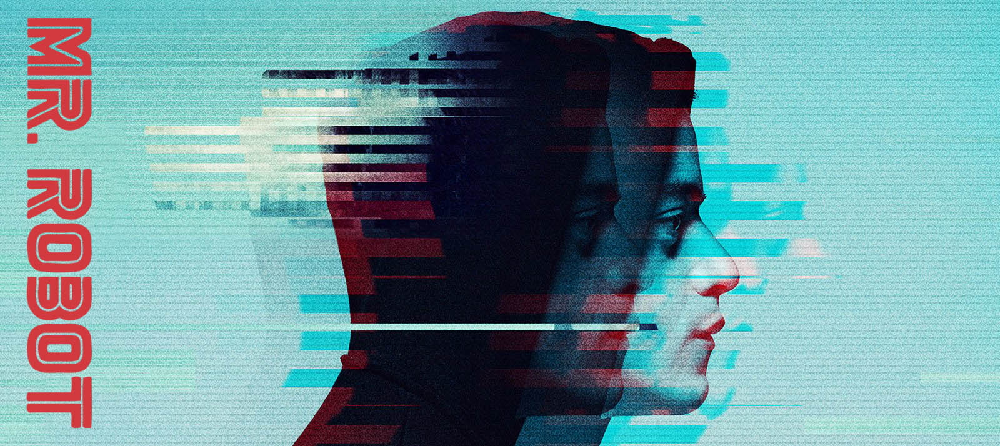

Mr Robot - the series
Mr. Robot is an American drama thriller television series created by Sam Esmail. It stars Rami Malek as Elliot Alderson, a cybersecurity engineer and hacker who has social anxiety disorder and clinical depression. Elliot is recruited by an insurrectionary anarchist known as "Mr. Robot", played by Christian Slater, to join a group of hacktivists called "fsociety". The group aims to destroy all debt records by encrypting the financial data of the largest conglomerate in the world, E Corp.

The pilot premiered on multiple online and video on demand services on May 27, 2015. The first season premiered on USA Network on June 24, 2015, and the second on July 13, 2016. The 10-episode third season premiered on October 11, 2017. In December 2017, Mr. Robot was renewed for a fourth season. In August 2018, it was confirmed that the fourth season, to air in 2019 and consist of 12 episodes, will be the final season.
 Mr. Robot has received critical acclaim and has been nominated for and won multiple awards, including the Golden Globe for Best Television Drama Series and was recognized with a Peabody Award. In 2016, the series received six Emmy nominations, including Outstanding Drama Series with Malek winning for Outstanding Lead Actor in a Drama Series.
Mr. Robot has received critical acclaim and has been nominated for and won multiple awards, including the Golden Globe for Best Television Drama Series and was recognized with a Peabody Award. In 2016, the series received six Emmy nominations, including Outstanding Drama Series with Malek winning for Outstanding Lead Actor in a Drama Series.